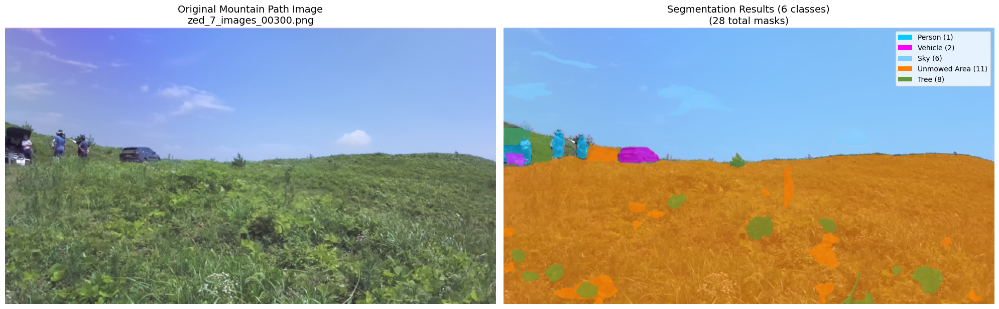
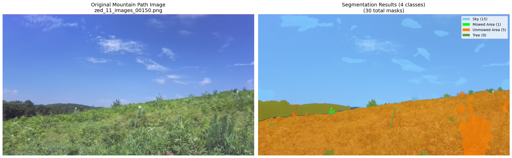
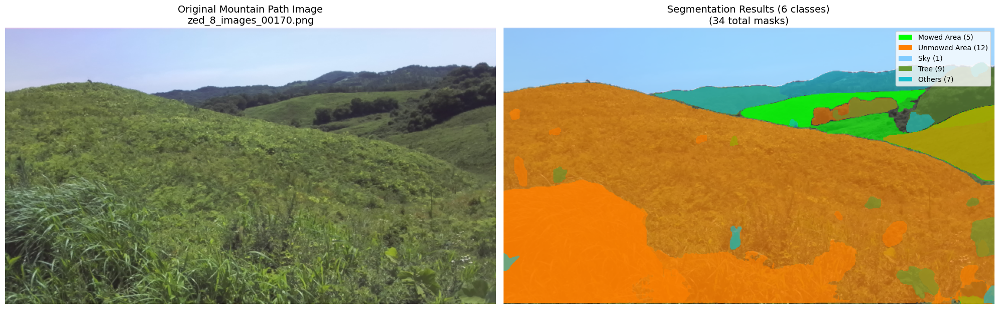

* 산길 원본 vs 오토라벨링 결과 (좌: zed_7_images_00300.png, 우: 6개 클래스 · 28개 마스크). Person / Vehicle / Sky / Mowed Area / Unmowed Area / Tree.
01 · Problem Definition
KIRO(한국로봇융합연구원) 산학협력 과제로, 산업 현장의 대규모 이미지 데이터를 사람의 개입을 최소화한 자동 라벨링 파이프라인으로 처리해 인건비와 작업 시간을 줄이는 것이 과제 목표였습니다. 인하대 팀은 AGI·LLM 연계 알고리즘을 개발하고, KIRO는 현장 데이터 수집과 검증을 담당했습니다.
첫 적용 도메인은 자율 예초 로봇이 사용하는 산길·초지 이미지였습니다. 특히 예초 완료 영역(Mowed)과 미예초 영역(Unmowed)을 구분해야 했지만, 해당 클래스 체계로 사전 라벨링된 공개 데이터셋이 없었습니다. 풀과 초지의 경계도 연속적으로 이어져 수동 폴리곤 라벨링에 시간이 많이 들고 작업자별 편차가 발생했습니다. 이에 모델을 별도로 학습하지 않고도 라벨 후보를 생성할 수 있는 제로 트레이닝 파이프라인을 설계했습니다.
02 · Solution Goals
이미지마다 실제로 등장하는 클래스 목록을 LLM으로 추출하고, SAM으로 마스크 후보를 생성한 뒤 각 영역에 클래스를 부여하도록 구성했습니다. 마지막으로 잘게 나뉜 인접 마스크를 같은 클래스끼리 병합해 예초 여부를 판단할 수 있는 영역 단위 라벨로 정리했습니다.
03 · Implementation
이미지별 클래스 후보 추출
먼저 각 이미지를 base64로 인코딩해 GPT-4o-mini에 전달하고, 해당 장면에 실제로 등장하는 클래스 목록을 추출했습니다. 사전에 고정된 라벨 목록만 강제하면 이미지에 없는 클래스까지 포함될 수 있으므로, 도로·사람·차량·예초/비예초 영역·배경 등 과제 목적에 필요한 범주를 안내하되 실제 등장한 클래스만 반환하도록 구성했습니다.
서로 다른 크기의 마스크 생성
SAM vit_h의 자동 마스크 생성기를 세밀한 설정과 큰 영역을 우선하는 설정으로 각각 실행했습니다. 두 결과를 합친 뒤 IoU 0.7 이상으로 겹치는 중복 마스크를 제거했습니다. 세밀한 설정은 작은 객체와 경계를 포착하고, 큰 영역 설정은 초지처럼 넓게 이어지는 영역을 놓치지 않도록 하기 위한 선택이었습니다.
마스크별 클래스 분류와 영역 병합
각 마스크의 바운딩 박스 영역을 잘라 GPT-4o-mini에 전달하고, 앞 단계에서 추출한 클래스 중 하나만 선택하도록 제한했습니다. 이후 같은 클래스에 속한 마스크 중심점을 기준으로 DBSCAN 군집화를 수행하고, 군집 안의 마스크를 합친 뒤 10×10 타원형 커널의 형태학적 닫힘 연산으로 작은 구멍을 정리했습니다. 이를 통해 예초 영역이 여러 조각으로 나뉘어 생성되는 현상을 줄였습니다.
이 산길 이미지에서 간단한 segmentation을 수행하려고 합니다. 다음과 같이 segmentation 해야 할 클래스들을 뽑아주세요: - 길/도로 관련 (예: Road, Path, Trail) - 사람이나 동물 (예: Person, Animal) - 차량 (예: Vehicle) - 예초 관련 식물 영역 (Mowed / Unmowed Area) - 기타 배경 (Sky, Rock, Tree, Building) - 애매한 객체는 others로 분류. 너무 세세하게 구분할 필요는 없고, 예초/비예초 영역 구분이 목적임을 기억해주세요. 이 이미지에 실제로 나타나는 주요 객체들만 포함해주세요.
* 사전 라벨 세트에 종속되지 않도록 이미지별 동적 클래스 추출 + 과제 목적을 프롬프트에 명시.
1단계: LLM으로 클래스 확인 중...
→ [Road, Mowed Area, Unmowed Area,
Sky, Tree, Others]
2단계: SAM으로 마스크 생성 중...
총 100개 → 71개 (IoU ≥ 0.7 dedup)
3단계: 전체 71개 마스크 분류 중...
Mowed Area: 5 → 5개
Unmowed Area: 18 → 12개
Tree: 12 → 9개
Others: 9 → 7개 (DBSCAN 병합 후)
4단계: 결과 시각화 완료
* SAM 원본 100 → 71(dedup) → 분류 → DBSCAN 병합 후 Mowed 5 · Unmowed 12 · Tree 9 · Others 7 마스크.
04 · Results
학습 없이도 산길 이미지에서 예초 완료 영역과 미예초 영역을 포함한 여러 클래스를 픽셀 단위로 자동 라벨링하는 파이프라인을 완성했습니다. 이미지별 클래스 추출, SAM 마스크 생성, 마스크별 LLM 분류, DBSCAN 병합을 연결해 별도의 도메인 파인튜닝 없이도 이미지 특성에 맞는 세그멘테이션 후보를 생성할 수 있었습니다. 다만 LLM의 마스크별 분류 편차와 DBSCAN 거리 기준은 추가 검증과 조정이 필요한 부분으로 남았습니다.

산길 이미지에 대한 첫 번째 정성 결과입니다. 하늘·나무와 함께 예초 완료·미완료 영역을 분리했으며, 4개 클래스에 대해 30개 마스크가 생성됐습니다.

넓은 초지와 능선이 포함된 두 번째 결과입니다. 6개 클래스에 대해 34개 마스크를 생성했으며, DBSCAN 병합 이후에도 예초·비예초 영역의 큰 경계가 유지되는지 확인할 수 있습니다.
* 정성 결과 — 좌: 4클래스 · 30 마스크 (하늘/나무 + 예초/비예초), 우: 6클래스 · 34 마스크 (예초·비예초 능선이 넓게 유지됨).
- 실행 환경 — Google Colab (GPU) · Python · PyTorch · segment-anything · scikit-learn · OpenCV
- Segmenter — Meta SAM (vit_h, sam_vit_h_4b8939.pth) ·
SamAutomaticMaskGeneratordual-config - LLM — openai/gpt-4o-mini via OpenRouter (base64 vision · Stage 1 클래스 추출 + Stage 3 마스크 분류)
- Post-processing — IoU 0.7 dedup · DBSCAN (eps=0.1, min_samples=1) · MORPH_CLOSE 10×10
- Data — KIRO가 수집한 산길 · 예초 현장 이미지, ZED 스테레오 카메라 (
forest_image/zed_*.png) - Team — 안우진 (인하대 조교수, 책임) · 장선호 (KIRO 주임, 공동연구자) · 조윤재 · 권유진 · 김건우 (인하대 학사 · 참여연구원)
- Notes — 학습 없는 파이프라인이라 Stage 3 LLM 분류 편차와 DBSCAN eps 튜닝이 다음 반복의 개선 포인트